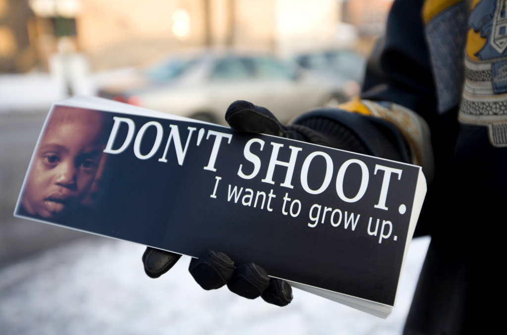
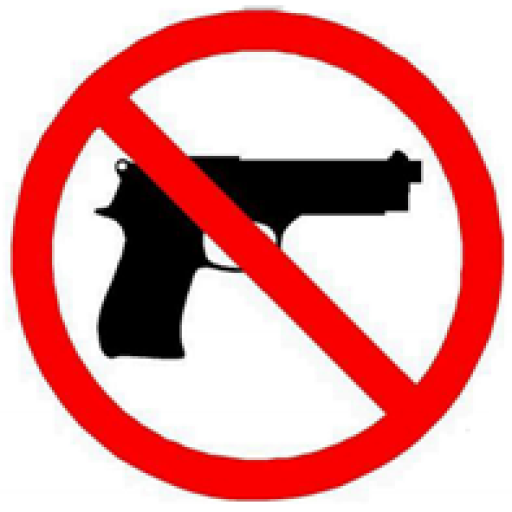

How gun violence affects families is because it can traumatized them in a way they cant forget and people die almost every single day to gun violence because anywhere people go even in a school they shoot so sometimes in family areas so thats how gun violence affect families everyday.
Gun violence is estimated to cost the American economy at least $229 billion every year. Let that sink in — $229 billion. In addition to the medical costs of a shooting, indirect expenses take the form of impact on victims' quality of life and victims' lost wages. Beyond the economic cost, we also see fractured families, neighborhoods, and communities. According to the Child Welfare League of America (CWLA), more than 5 percent of America's children have witnessed a shooting. It's time to focus on how repeated exposure to gun violence affects the next generation.
Even living under the threat of gun violence affects our health. According to a 2018 study by the Pew Research Center, the majority of U.S. teens fear a shooting could happen at their school, and most parents share their concern. Students of color express a higher level of concern than their white peers. Everyone has the right to live without the fear of being shot. Where you live shouldn't determine if you live. It's in our hands to end the toll of gun violence in our country.
In 2010 alone, 36,000 victims of firearm assaults visited the emergency room, and 25,000 were admitted to the hospital — coming to a total cost of $630 million in medical treatment. The majority of that price tag — or 52 percent — was charged to taxpayers through publicly funded health insurance, and 28 percent was billed to people who lacked health insurance.
2017 report by the Urban Institute shows that higher levels of neighborhood gun violence can be associated with fewer retail and service establishments as well as fewer new jobs. Higher levels of gun violence are also associated with lower home values, credit scores, and homeownership rates. As a result, gun violence hurts a community's housing prices and drives residents to relocate from or avoid moving to affected neighborhood

Gun violence is estimated to cost the American economy at least $229 billion every year. Let that sink in — $229 billion. In addition to the medical costs of a shooting, indirect expenses take the form of impact on victims' quality of life and victims' lost wages.
Beyond the economic cost, we also see fractured families, neighborhoods, and communities. According to the Child Welfare League of America (CWLA), more than 5 percent of America's children have witnessed a shooting. It's time to focus on how repeated exposure to gun violence affects the next generation
.jpg)